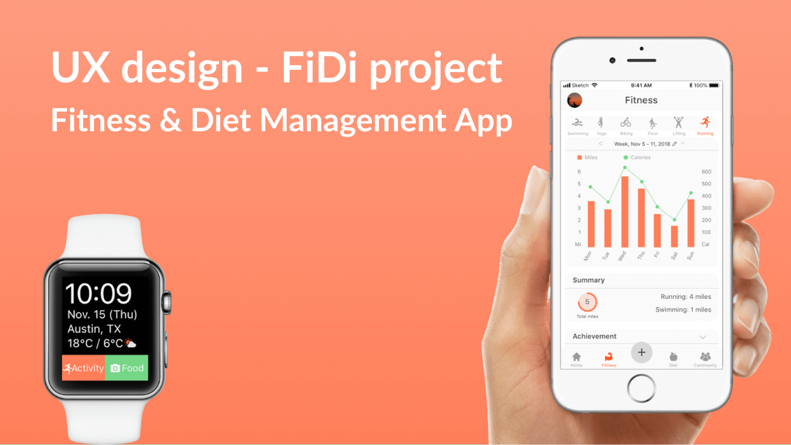

Summary
[Problem] People struggle to monitor and integrate fitness and diet habits to enhance their health conditions.
[Solution] My team went through all the UX design process to create Fidi: a diet and fitness tracking app both for smartphones and wearables.
[My Role] I was involved in all the steps, and especially contributed to User Research, Design Requirements, Prototyping, and User Testing.
{kind=link}
Competitive Analysis
We conducted competitive analysis to see what other products are available for fitness and diet. I investigated two apps, and summarized the results.
- Diet apps usually have a good way to collect diet data and provide related tips for the users, while fitness apps usually do not integrate diet information within the app.
- These apps utilize achievement features, social connection (friends & community), goal settings, and motivational quotes to motivate the users.
- Not all apps are compatible with a variety of wearable devices, which may cause inconvenience to the user.
{kind=link}
User Interviews / Surveys / Analysis
Our suvery results indicate most of people care about their fitness and diet, but struggle to manage them well. I visualized the user research with empathy mapping.
{kind=link}
{kind=link}
{kind=link}
{kind=link}
Persona
With all the data gathered from the research, we aimed to represent our results using personas. I was responsible for creating this persona.

Design Requirements
Based on our previous steps, we generated design requirements to address the most important painpoints. ("Deep Dive")
- Motivators to help users stay on track and meet their goals
- Users can easily and quickly monitor their eating habits
- Users can monitor a variety of workouts easily
- Users can know what they should do, and if they are doing right
- Users can see their progress with beautiful visualization
- Users can see the recommended recipes on what I buy
{kind=link}
Sketching
We did sketching sessions to generate design ideas, and then moved prototyping. These are my works.
{kind=link}
{kind=link}
Low Fidelity Design & User Testing
Other two members and I worked together to create these prototypes for phones. Designs for wearable devices are all my works.
Users can see their progress of the fitness and dietary activities. ->
{kind=link}
{kind=link}
{kind=link}
Users can monitor their fitness and dietary. (Scan a food or start an activity) ->
{kind=link}
{kind=link}
{kind=link}
Wearable device for starting an activity or monitoring dietary
{kind=link}
{kind=link}
{kind=link}
{kind=link}
{kind=link}
{kind=link}
User Testing Results
We conducted three rounds user testing (21 participants in total). They were provided 7 tasks (right). I conducted 5 sessions, and revised screens.
Home Screen
- Based on the user testing, we redesigned the progress timespan, according to Apple Health, where users can switch between day, month, and year.
- To make the progress indicators more clear, we changed the icons to better represent them.
Adding food
- Users first instinct to add a food is to search & Users look into the fitness and diet tabs to add food instead of clicking "+" at the icon bar. Thus, we enabled "adding" from the fitness and diet tabs
Diet & Fitness Suggestions
- Users looked for recommendations under the diet / fitness tabs and on the community page. Thus, we decided to include recommendations in both community and their respective tabs.
High Fidelity Design
We finally created our hifi prototypes. You can directly interact with our protypes here. Two of the other members and I worked together to create these prototypes for mobile phones. I was also responsible for prototyping for wearables.
Users can see the progress on their fitness and dietary.

Users can start an activity and monitor dietary

Users receive recommendations
What I learned from this project.
Throughout the entire UX design process, I could have a practical experience in how to comprehensively and logically connect research, ideation, sketching, designing and user testing. As FiDi focuses on the integration - fitness and diet -, it was not easy to narrow down our scope and decide the design requirements. And on the user testings, many participants were confused about where to find the desired functions, because it can be in the fitness, the diet, or the community section. But finally I think our app successfully integrates the aspects of both diet and fitness, and provides a comprehensive experience about users’ health.
I personally enjoyed designing functions and screens for wearable devices. Since the screen is small, the possible functions are limited, but wearable devices are more convenient and accessible for users. I learned the importance of understanding the contexts of how users interact with wearables, and providing the appropriate functions for the situations with minimal UI designs.
Overall, we could spend appropriate time on each of the phases, and iterate the design and user testing several times. These processes had made our design solutions more effective and efficient. If I could have another chance to do a similar project, I would focus on a more specific pain point, instead of focusing on all the problems that our project tried to solve.